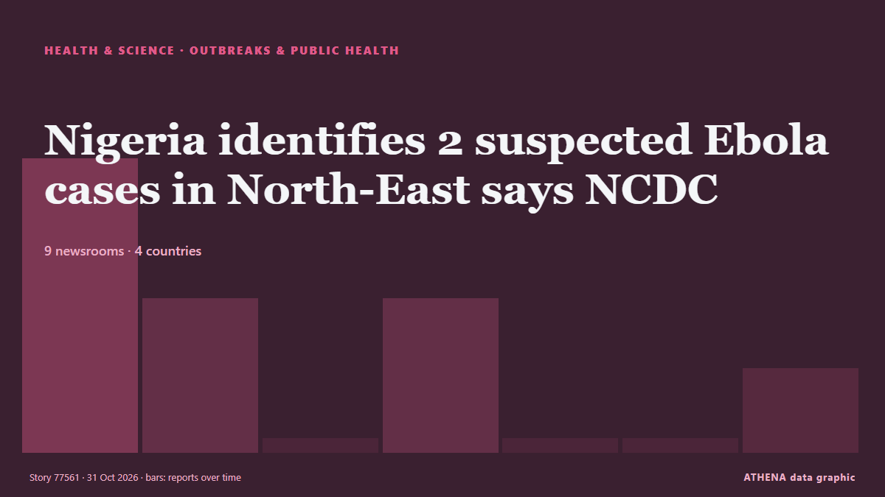

Здоровье, наука и исследования
Заголовки приводятся на английском языке, как они были опубликованы.

Эпидемии и здравоохранениеNigeria identifies 2 suspected Ebola cases in North-East says NCDC
The Nigeria Centre for Disease Control and Prevention, however, says that confirmation is subject to laboratory results. из Channels TV
| 18 окт. | 7 |
|---|---|
| 19 окт. | 41 |
| 20 окт. | 19 |
| 21 окт. | 40 |
| 22 окт. | 81 |
| 23 окт. | 76 |
| 24 окт. | 36 |
| 25 окт. | 45 |
| 26 окт. | 83 |
| 27 окт. | 79 |
| 28 окт. | 76 |
| 29 окт. | 86 |
| 30 окт. | 75 |
| 31 окт. | 28 |
MBA student dies after jumping from Jaipur’s Poornima University building
The student, identified as a resident of Prem Nagar in Jaipur's Gurjar Ki Thadi area, was pursuing her second year of MBA. из Hindustan Times
South Africa beat Australia by 176 runs in third Test to win series
Join IOL Sport for comprehensive live coverage of the decisive third Test from Cape Town. из IOL
Possible new dwarf planet identified orbiting beyond Pluto
WASHINGTON, Oct 28 - Scientists using a Chile-based telescope have identified an icy object orbiting beyond Pluto that may join our solar system's small roster of dwarf planets. из The Straits Times
Duale hits back at Saudi Arabia over Ebola restrictions on Kenya
Health Cabinet Secretary Aden Duale has criticised Saudi Arabia’s decision to suspend travel by its citizens to Kenya and halt visa issuance to travellers from the country, terming the measures… из People Daily
Part of London's Oxford Street pedestrianised 'forever'
A stretch of London's iconic Oxford Street was made traffic-free "forever" from Monday, as pedestrians took over the country's most famous shopping street, absent of the capital's... из Oman Observer
US inmate Christa Pike says she woke up 'confused and in pain' after failed execution
It is Pike's first public statement since she survived an execution attempt by lethal injection in September. из BBC News
Belleville, Ont., police officer who thwarted synagogue attack released from hospital
The Belleville, Ont., police department says Const. из CBC News (alternative feed)
Mum of 3 ends up unconscious and in hospital while getting ready for Halloween
Jess was collecting sticks for Halloween when things went all wrong. из WalesOnline
Health Minister assures public of Ghana’s readiness to respond to Ebola
The Minister of Health, Kwabena Mintah Akandoh, has assured the public that Ghana is prepared to detect and respond to any potential Ebola case, following an inspection of screening and emergency… из MyJoyOnline
Health insurance plan costs on Healthcare.gov to rise by double digits in 2027
Obamacare enrollees could see their health insurance premiums rise by double digits for a second year in a row, according to a report published Friday. из The Hill
Junior Chipolopolo crowned champions, as FAZ assures transition
This content is for members only. Visit the site and log in/register to read. из News Diggers
Glenn Phillips ton fuels New Zealand's 87-run demolition of India
New Zealand's Phillips hits sublime century in 87-run win over India. из Gulf News
Ghostly Cat’s Head Nebula Lurks Within Sight of NASA’s Hubble, Webb
Like a spectral form rising out of a cold mist, NASA’s Hubble and James Webb Space Telescopes have captured a hauntingly dynamic star-forming scene. из NASA news releases
Andy Burnham ‘open’ to calls for British formal apology for slavery
The Prime Minister expressed his personal ‘sorrow and regret’ for the suffering caused by the transatlantic slave trade. из Evening Standard (London)
Earliest Known Recordings of Louisiana Creole Language Rediscovered After 91 Years
An overlooked set of 1935 recordings of the Louisiana Creole language has been identified as the earliest known extended audio of its spoken form, offering a rare chance to hear how people in New… из Greek Reporter
Tumbler Ridge victim Maya Gebala’s father says she’s leaving hospital after 262 days
The father of Tumbler Ridge attack victim Maya Gebala says she is being released from BC Children's Hospital, more than eight months after being shot three times. из The Canadian Press (via CityNews)
Deaf children exposed to sign language from birth match hearing peers in early maths
A new study indicates that early access to language is crucial for children's understanding of numbers. из Times of India
7 candidates nominated to lead World Health Organization
Selection process to include public forums, executive board interviews before final appointment in May 2027. из Anadolu Agency (English)
Irish government to scope out possibility of unity with Northern Ireland for first time
DUBLIN, Oct 30 - Ireland will set up a government body that would for the first time undertake research and preparations for the possibility of future unity with British-run Northern Ireland, Prime… из The Straits Times
Wind turbines have scary impacts on bats. Here's what can be done
In this issue of our environmental newsletter, we find out how to reduce bat deaths from wind turbines, check out a new book of close-ups of creepy crawlies and attend a fashion show full of ideas… из CBC News (alternative feed)
Martian meteorite found in the Sahara is 4.1 billion years old
A meteorite found in 2022 in the Sahara in Mali formed in the Martian crust at least 4.1 billion years ago, according to scientists, making the reddish igneous rock perhaps the oldest of the 435… из Cyprus Mail
Former world champion boxer Tony Bellew is encouraging people to get a flu jab this winter
New research has found that people are putting it off. из WalesOnline
Parents sue OpenAI over ChatGPT advice to cut daughter’s seizure drug
The parents of a 31-year-old Amazon software engineer have sued OpenAI, alleging that ChatGPT coached their daughter to stop taking her epilepsy medication before she died in February. из The Next Web
Joanne McNally says thinking Richard E Grant was faithful was ’embarrassing’
The 43-year-old was banished from the castle before Friday’s final. из Evening Standard (London)
Oxygen Cylinder Explodes Inside Ambulance, Killing at Least 10 in Pakistan
Officials say an oxygen cylinder exploded inside a parked ambulance at a government-run medical facility in southern Pakistan, killing at least 10 people, including a patient of the facility. из ABC News (International)
22-year-old arrested after 6.4kg of cannabis seized
A 22-year-old man was arrested in Engomi on Thursday after police seized around 6.4kg of cannabis linked to alleged drug importation and possession with intent to supply. из Cyprus Mail
Flu Season Starts Early in Greece as New Variant Raises Concern
Greece’s flu season appears to have begun about two weeks earlier than usual, while a genetic change in the virus is being monitored in the United States. из to vima
26% of adults have experienced sexual violence - report
Just over a quarter of the population have experienced sexual violence as an adult, according to a report. из RTÉ News
Queensland drive-by shooting update
A victim of the Logan pub drive-by shooting remains in critical condition but in good spirits, his family says. из Sydney Morning Herald
Nigeria: Ebola - How Months of Ebola Preparedness Helped Nigeria Confirm First Case Within 24 Hours - Minister
[Premium Times] Mr Pate described the response as a continuation of Nigeria's experience in managing public health emergencies, recalling how the country contained the Ebola outbreak in 2014. из AllAfrica
Solomon Islands PM sent to Australia for urgent medical treatment
The Solomon Islands prime minister has called for more job opportunities for Solomon Islanders through Australia's Pacific Australia Labour Mobility scheme. из RNZ Pacific
Stroke survivor saved after speaking 'gibberish' on call
A man is urging people to be aware of the stroke symptoms after he was saved by a colleague who noticed he was speaking "complete gibberish" on a work call. из RTÉ News